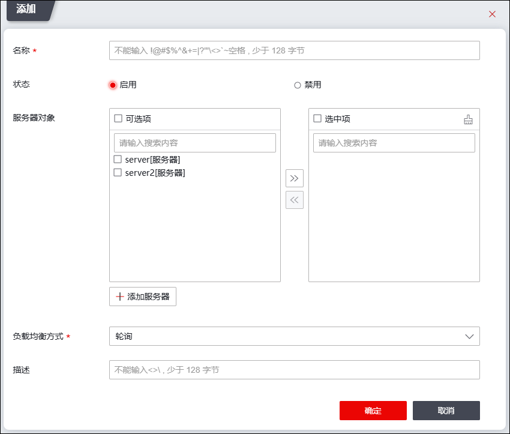

配置负载均衡调度策略的具体操作如下：
|
²调度策略中的成员必须是服务器资源，并且每个服务器资源同一时间只能够被一个均衡组引用。关于服务器资源的设置具体请参见 服务器。 |

| 步骤1 | 选择。 |
| 步骤2 | 点击【添加】，弹出“添加”窗口，如下图所示。 |

在设置负载均衡时，各项参数的具体说明如下表所示。
参数 |
说明 |
|---|---|
名称 |
设置服务器负载均衡组的名称。名称中不能包含特殊字符：！@#$%^&+=|?\""\\<>'~以及空格。中文最大输入长度为42，英文最大输入长度为127。 |
状态 |
开启状态开关即可启用均衡组资源。 |
服务器对象 |
选择要加入此均衡组的服务器资源。 |
负载均衡方式 |
设置对多个服务器进行负载分配时所依据的原则。 说明： 1）轮询：当负载均衡组中的所有服务器性能基本相同时，可以选择轮流选择的方式，网络请求会轮流分配给负载均衡组中的服务器； 2）加权轮询：根据服务器的权重值来分配服务请求流量。根据权重的负载均衡方式可以保证高性能的服务器负担较多的请求，性能差一点的服务器承担相对少一点的请求； 3）最少连接：记录服务器的当前连接数，将新连接分配到当前连接最少的服务器； 4）加权最少连接：在最少连接方式下根据系统定义的权值分配连接； 5）根据源地址作HASH查找：相同的源IP地址均衡到相同的服务器； 6）根据目的地址作HASH查找：相同的目的IP地址映射到相同的服务器上。 |
描述 |
设置负载均衡组简单的描述信息。 |
| 步骤3 | 点击【确定】按钮完成服务器负载均衡的添加。 |